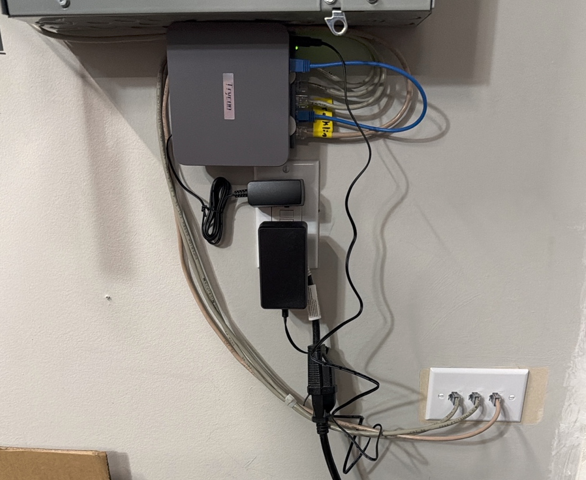

A few days after I published a long writeup about my home energy controller, there was a power outage at the house. I was not home. The controller, which I had described as a small mini-PC running Home Assistant and Node-RED in the garage, was — it turns out — plugged into the wrong outlet.
This is the story of what the system did during those few hours, what it got wrong, and what I learned about a class of problems I had not been thinking about. The previous writeup was about building a controller that protects the house. This one is about the embarrassing realization that I had not extended the same protection to the controller itself.
I noticed something was wrong because I couldn’t reach the gateway by SSH. I ran a couple of probes from different paths — Tailscale, direct LAN, the public name — and all of them returned “network unreachable.” That ruled out a routing problem. The gateway was simply not on the network.
It took a phone call home to confirm what the telemetry couldn’t, because the telemetry is in the gateway and the gateway was off. Someone had to walk into the garage, look at a small black box that wasn’t blinking any lights, and push its power button.
Three things were true at that moment, in increasing order of how much they bothered me:
That last one is a five-minute fix the next time I’m in the garage. The first one was outside my control. The second one is the interesting one, and it took a few hours of digging to understand why it was the most expensive of the three by a wide margin.
When the gateway came back online — after grid had returned and a human had power-cycled the box — it cold-booted into a Node-RED process that had no memory of what it had been doing before it died.
This sounds obvious in retrospect. Node-RED’s flow context, by default, lives in memory. When the process dies, the context dies with it. The controller’s state machine, last-decision cache, last-action timestamps, command cooldown ledger, EcoFlow per-device dwell timers, and override transition flags were all gone. The first cycle after boot had to evaluate the policy cascade from scratch, against live data, with no prior context.
That first cycle made a wrong decision.
Specifically: it saw the Franklin home battery at 85% state-of-charge — exactly at the soft cap. It saw strong afternoon sun. It saw a brief unobserved race at the cap-edge boundary. And without any memory of “I was in standby a minute ago, holding at the cap,” it interpreted the same conditions as a new opportunity to fill the battery from solar. It wrote a charge limit of 11.5 kilowatts to Franklin and let it pull.
Two minutes later, the next cycle ran with slightly different facts and decided standby was correct. It tried to write standby and the previous write was still recent enough to register. Four minutes after that, the cycle decided solar-fill again. The one-hour action cooldown — designed exactly to prevent rapid oscillation — kicked in at that point and started suppressing further state changes. Unfortunately, the direction it pinned the system in was the wrong one. Franklin was now wedged in solar-fill mode, with a charge limit far above zero, while the engine quietly wanted standby and couldn’t say so.
For roughly half an hour after that, Franklin ran a charge limit of 11.5 kilowatts into a battery already past its soft cap. Solar covered about two-thirds of what the battery wanted. Grid covered the rest. The system imported roughly 1.3 kilowatt-hours from the utility specifically to push the home battery from 85% to 92%, which is the precise opposite of what the policy says it should ever do. Twenty cents of electricity, plus a much larger amount of net-metering credit lost because that same solar would have been worth more exported.
I noticed because the drift sentinel sent me a notification.
The sentinel is a small Python service that runs every five minutes on a systemd timer. Its job is to compare three things — what the policy engine source code says, what the engine running inside Node-RED says, and what the live HA sensor says the engine published — and report drift. There’s a static check (do the SHA-256 hashes match across all three?) and a behavioral check (does the engine’s intent match what Franklin is actually doing right now?).
The static check stayed green throughout. The behavioral check went red within a few minutes of the cooldown wedging in. The sentinel did its job correctly.
It also did nothing about it.
The sentinel was designed as a smoke alarm, not a sprinkler system. It can detect that something is wrong and produce a persistent notification in Home Assistant — which is what got my attention. It does not have any authority to issue corrective writes itself. That separation was deliberate in the original design: the sentinel observes the executor; if the sentinel could also command the executor, the boundary between observability and actuation would be muddier. But sitting on the wrong end of a postmortem, I had to admit that “detection without remediation” is half a tool. If the cooldown wedge had happened at 2 AM instead of when I was at my desk, it would have run for at least half an hour and probably the full hour before naturally clearing.
I forced a corrective write manually by invoking the executor script directly, bypassing the cooldown. Within a minute Franklin stopped pulling from grid, the battery stopped overcharging, and the sentinel went back to aligned. End of incident, from the system’s perspective. Beginning of incident, from mine.
The fixes broke into three buckets.
The physical fix. The gateway will move onto the Delta 3 Max’s AC pass-through, taking advantage of an UPS that was sitting unused six feet away. Combined with a single BIOS setting — “Restore Power After AC Loss” set to Power On — this means the gateway either rides through short outages without rebooting at all, or it cold-boots cleanly on its own when grid returns after a longer outage. No human intervention. Total cost: five minutes of work, zero dollars, and the embarrassment of admitting I should have done this on day one.
Persistent flow context. This was the most important
software change and it turned out to be the simplest: a six-line block
in Node-RED’s settings.js that switches the default context
store from memory to localfilesystem. Node-RED
has shipped this feature since version 0.19, released in 2018. Every
flow.set and flow.get call in the controller transparently started
persisting to disk and rehydrating on restart. No code changes needed. I
had simply never thought to set it, because the question “what state in
my flow context matters enough to persist?” had a comfortable-feeling
answer of “none of it” until the outage made the answer “all of it.” I
round-trip tested by restarting Node-RED and watching the controller’s
enteredAt timestamp survive across the restart instead of
being re-stamped to the post-restart time. That was the proof that the
controller was no longer waking up amnesiac.
Cooldown grace. Twenty lines in the executor, plus a few unit tests. When the elapsed time since the last execution exceeds ten minutes — far above the normal two-minute facts cycle, but well below the one-hour cooldown — treat the persisted cooldown as expired. This catches a specific failure mode that emerged only because of the persistence fix: a cooldown timestamp that was correct at write time, persisted faithfully across a long downtime, but represents a write from a world that no longer exists. After a downtime, the engine should be free to reassert the right state on the first cycle, not wait an arbitrary fifty more minutes for a stale clock to tick over.
Two further changes I filed and deliberately deferred. The first was a sentinel-driven cooldown bypass: when drift persists for multiple consecutive cycles, allow the sentinel one out-of-cooldown corrective write. This would close the gap I described earlier, but the heuristic is genuinely risky — a poorly-tuned “bypass cooldown on drift” rule could create write loops if Franklin ever responds in a way the engine interprets as drift. The second deferred change was a one-time rehydration of “are we in standby” from Franklin’s cloud-side TOU profile on the first post-boot cycle, as belt-and-suspenders on the persistence fix. Both are real but neither is urgent now that the two simpler fixes are in place. Better to watch the simpler fixes work in production for a few weeks before stacking more on top.
I had built a system whose purpose is to make the house resilient. I had not thought hard enough about whether that system itself was resilient.
Each individual decision that contributed to the incident had a reasonable justification at the time:
Each decision in isolation was defensible. The pattern only became visible when a single event walked through all four of them in sequence. The outage didn’t expose a bug in any one component. It exposed an omission across all of them — none of them had been designed with the question “what happens when this entire layer disappears for a few hours?” in mind.
That is the question I had to add to my own design checklist as a result of this incident. The previous writeup explained, at length, how the controller protects the home batteries and the solar array and the EV and the EcoFlows. It did not say anything about how the controller protects the controller. Adding that — checkpointing, post-boot grace, self-healing under drift, hardware redundancy at the meta-layer — is the work the outage made visible. It is also, in some ways, the more important work, because the failure modes it covers are the ones you don’t see until you’re three hours into an unattended incident.
The total direct cost of the incident was about twenty cents of grid import, plus the lost net-metering credit value of solar that should have been exported but instead went into a battery that didn’t need it. Both numbers are small.
The cost of the lesson was, in pure engineering-time terms, about three hours of work — one to diagnose, one to write the persistence and cooldown-grace fixes with tests, one to write this up. That is not nothing, but it bought a class of failures I will not have to debug again.
And it bought, more importantly, the discipline shift. Future tickets will get a different review question attached: “if the gateway loses power during this operation, does the system come back in a coherent state?” That question would never have occurred to me before the outage. It will occur to me unprompted now, for every new ticket, for the rest of the time I run this system.
A small bill, on net, for a useful upgrade.
This is a follow-up to a longer writeup about the energy controller itself, published a few days earlier. The system runs on a residential install in the Pacific Northwest. All the integrations are off-the-shelf Home Assistant components except the policy engine, the safety logic, and the drift sentinel, which are this project’s own code. The fixes described above are committed and live in production; the physical move of the gateway to the EcoFlow pass-through is queued for the next time I’m in the garage with a flashlight.